GM:雅
メインログ /
雑談ログ
Character Sheet
PC1：マヤ (キャラシート) PL：灸
PC2：ヴァニタス (キャラシート) PL：がぶらす
PC3：日向雛 (キャラシート) PL：めい
PC4：メアリー＝ブラッドルード (キャラシート) PL：ふろずん
PC5：イクサ・スミェールチ (キャラシート) PL：タンゴ
Index
ステージ：砂上都市サラーブ
◆Preplay◆
HO&PC紹介
◆Opening Phase◆
00 奪われた可能性
01 迷い子の仮宿
第1回目開始ポイント
ステージ：砂上都市サラーブ
西アジアに位置する非常に広大な砂漠に突如として現れた"砂上都市サラーブ"。
"五本指"と呼ばれる統制者達と数多くのヴィラン達が蔓延る都市ではごく当然のようにオーヴァードが力を振るい、秩序と混沌が危ういバランスで続いている。
都市の人間のほとんどは裏社会の人間であり、RWステージの定番であるヒーローのような善性を持つ人間はほんの一握りいるかいないか。他人の助けを待っていては食いつぶされる弱肉強食の世界だ。
このステージは己の欲望に忠実である者達が跋扈する舞台である。
■簡易用語集
・砂上都市サラーブ
第一次レネゲイドウォー終結から数か月で大きく発展した大都市。
中心には摩天楼が聳え、狭いながらも一つの国として成り立つ程の人口と活気がある。
しかしそこに住む人間達は大なり小なりの悪事に手を染めているヴィランであり、五本指と呼ばれる者達と数々の組織に依って統括されている。
・五本指
人差し指。中指。薬指。親指。小指を指した統一組織の名称。
サラーブを大きく発展させた5人のヴィランで構成されているが、その顔を知る者は少なく、また自らその立場を（一部を除いて）明かそうとしない。
親指は傘下の裏切りに遭い死亡し、現在は二代目である。
そして小指は空席の状態となっており、都市の中では有名な話となっている。
・B.T.Cスーツ＆ウェポン
血涙結晶の工房が製造する武具。B.T.CとはBlood and Tears Crystalsの略語。
中指の傘下組織であり、オーヴァードの死体から高品質な防具や武器を仕立て上げること技術を保有している。
工房の主を名乗る女ヴィラン"クレーン"は「彼らが全うした人生を如何に表現できるか」と彼女なりの敬意と芸術性を持ち合わせているが、その感性に共感する者はサラーブでも限りなく少ない。
■砂上都市サラーブ
第一次レネゲイドウォー終結時期に突如としてアラビア砂漠に現れた砂上都市。
都市の中心には摩天楼が聳え立ち、狭い都市なれど一つの国として成り立つ程の活気が取り巻いている。
サラーブはアラビア砂漠北東部に位置し、都市内の人口は数万人。その8割以上が犯罪に手を染めているオーヴァードである為、有数の犯罪都市として各国から警戒対象としてマークされている。
住人の人種も多様であり、あらゆる国の言語が話されている。その背景としては国を追われた犯罪者などがサラーブへ安住を求めて身を寄せた結果だとも言う。
■五本指
サラーブを統治する統一組織。五本指と呼ばれる所以は5人のヴィランが設立時に関わっていたことが由来とされている。
ただし、在籍するメンバーは『自身が五本指である』ことを明かそうとせず、サラーブが成り立つ以前からいたヴィランにしか正体が知られていない。身分を明かせば次席を狙った裏切りや暗殺が起きることを危惧しているから、とも噂されている。
その為、新参の木端なヴィランには『五本指とかいう偉いやつが都市を仕切っている』程度の認識しかなく、自身を五本指の一人と騙る者が後を絶たない。
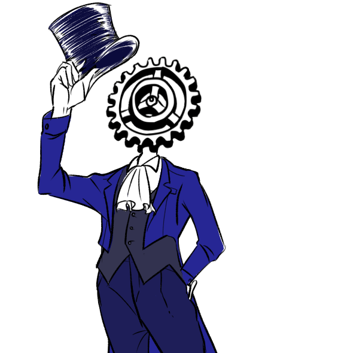
"人差し指" グリムギア
・DATA
性別：無
年齢：不明
ブリード：ピュアブリード
シンドローム：バロール
ワークス/カヴァー：レネゲイドビーイング/人差し指
【肉体】12 〈白兵〉5
【感覚】15 〈射撃〉8 〈知覚〉10
【精神】25 〈RC〉20 〈知識：レネゲイド〉25
【社会】30 〈交渉〉20 〈情報：ヴィラン〉10 他
・解説
都市の指導者。五本指のまとめ役。歯車のRBと自称している。
頭部が歯車という奇怪な容姿ではあるが、性格は物腰柔らかく、敵を作りにくい。
"中指"のスコーピオに人差し指の座を狙って反旗を翻されたこともあったが、瞬く間に彼一人が制圧したという。それ以来、スコーピオの野心は鳴りを潜めた。
表の顔は「都市管理局局長」を名乗っている。管理局はグリムギアと、彼の部下である数名のオーヴァードで構成されており、都市の現状を常に把握する為に働いている。
サラーブが危機的状況にあれば、彼はPC達に官局局長の名で依頼を出すだろう。
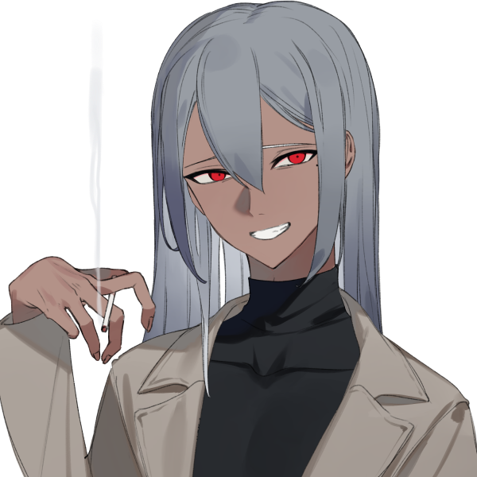
"中指" スコーピオ
・DATA
性別：男
年齢：32
ブリード：クロスブリード
シンドローム：バロール/ハヌマーン
ワークス/カヴァー：ヴィラン/中指
【肉体】11 〈白兵〉8 〈回避〉5
【感覚】14 〈射撃〉9
【精神】17 〈RC〉10 〈意思〉8 〈知識：ヴィラン〉12
【社会】15 〈交渉〉18 〈調達〉20 〈情報：FH〉12 他
・解説
都市の市場を取り仕切る闇商人。
粗暴で野蛮、口が悪くグリムギアと対照的に敵を作りやすい男。
彼の行う事は倫理に欠けることが多々あるが、その全ては都市を想ってのことである。決して狂っている訳ではない。
表の顔は「闇市場のボス」を名乗っている。サラーブで仕入れるアイテムの半分以上は彼からもたらされることは間違いない。
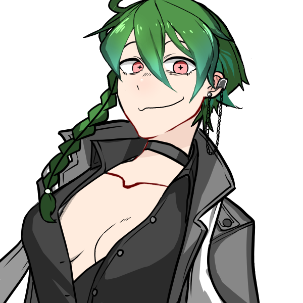
"薬指" ネオン・ファルシオン
・DATA
性別：女
年齢：約700歳
ブリード：クロスブリード
シンドローム：オルクス/モルフェウス
ワークス/カヴァー：ヴィラン/薬指
【肉体】14 〈白兵〉10 〈回避〉8
【感覚】12 〈射撃〉5
【精神】18 〈意思〉10 〈知識：ヴィラン〉10
【社会】13 〈交渉〉8 〈調達〉10 〈情報：噂話〉14 他
・解説
都市の要。
おちゃらけた性格で誰にでも平等に接する。が、刹那主義。快楽主義の傾向がある女。いつも明るく楽しくがモットーであるようだ。
都市内の建物の殆どが彼女の組織によって建てられ、インフラの一部も運営している。都市に住む全ての住人が彼女の恩恵を受けていると言っても過言ではない。
表の顔は「カジノの支配人」を名乗っている。小指が空座となる前は「不動産王」の肩書だったが、華々しい方がええとの事で現在はカジノの支配人を名乗ることとなった。
自身が薬指であることを隠そうとしないので、割とよくポロっと正体を零す。
"小指" 不在
現在の"小指"は空席であることは都市では周知の事実。
しかし理由は明らかになっておらず、自らその地位を捨てたとも、何かの責任をとって退いたとも噂されている。
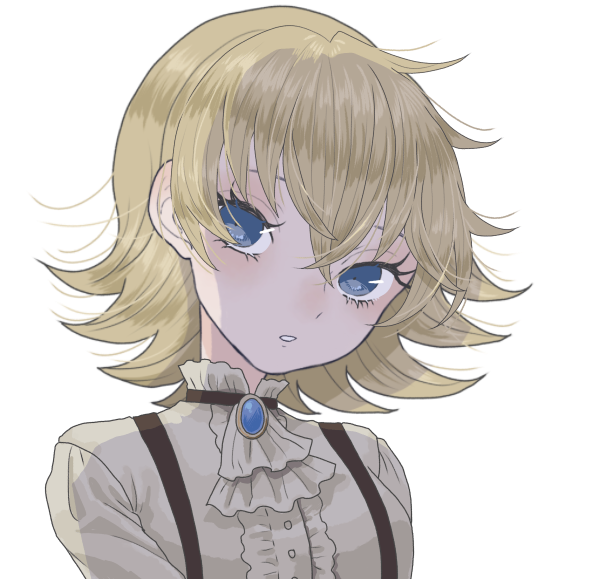
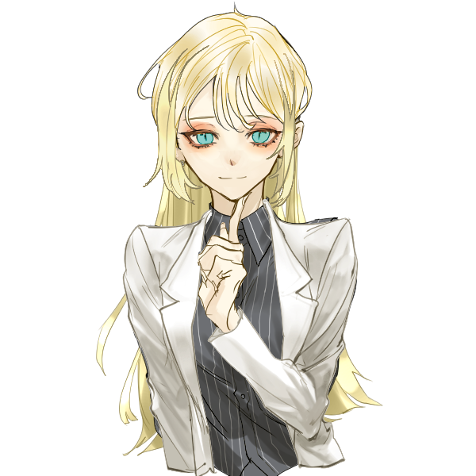
"親指" エトワール・ウェイストルム
・DATA
性別：女
年齢：12
ブリード：クロスブリード
シンドローム：ノイマン/エグザイル
ワークス/カヴァー：ヴィラン/親指
【肉体】 8 〈白兵〉5 〈回避〉6
【感覚】15 〈射撃〉10
【精神】10 〈意思〉8 〈知識：ヴィラン〉5
【社会】14 〈交渉〉10 〈調達〉9 〈情報：ヴィラン〉20 他
・解説
都市の番犬。懲罰者。
指の中で最年少で新参の少女。前任者の父は部下の裏切りに遭い死亡。自身の手で裏切り者を討ったことで親指の座に就いた。
ヴィランで組織した傭兵団"デザート・ハウンド"を率いており、彼女は彼らを家族と呼び、使役する。
指達の前では甘く見られぬ様に大人の姿に転じ、親指らしく頼りある頭目を演じている。
表の顔は「エトワールファミリーのボス」を名乗っている。傘下の組織を束ね、サラーブ内で組織間の無用な軋轢を生まない為に日々尽力している。
五本指の中で最年少であるが、組織を束ねる責任感は誰よりも持ち合わせている。
■歴史
第一次レネゲイドウォー終結時、敗走した一部のヴィラン達は身を隠す為にアラビア砂漠へと集った。期が熟すまで身を潜め、牙を研ぐための場所を設けたのだ。
ヴィランズネットを介して同胞を募った結果、砂漠には数百人規模のヴィランが集結。小さな集落を築くも過酷な環境に耐え切れず多くの離反者が出たが、それでも残ったヴィランがいたのは指導者である"グリムギア"の存在があったからだろう。
その後、ふらりと現れたファルシオンの手によりまともな建造物が建ち始め、町と呼べるまで発展を遂げた。
レネゲイド解放から9年。各国のヒーロー達が共存を図ろうとした様に、砂漠のヴィラン達も共存を図ろうとしていた。最低限の秩序と統率を望んだ者は多かったが、秩序を望まないヴィランに依って暴動が起きる。
この暴動はしばらくして鎮圧されたものの町への被害は大きく、癖の強いヴィラン達を纏め上げ、力ない者を統べる指導者達が必要と判断した"グリムギア"が『五本指』を結束。図らずしも強者が弱者を統べるヴィランらしい組織となった。
それから僅か数年。始めは烏合の衆にも満たなかった集落は"砂上都市サラーブ"と名乗る大都市へと発展を遂げる。
しかし周辺各国がサラーブを見過ごすはずもなく、膨れ上がった悪の居城に幾度となくヒーロー達を送り込み都市を陥落させようと試みた。だが統率されたヴィランはヒーロー達の想像以上に強力であり、未だ都市は健在である。
それでも立て続けに襲来するヒーロー、果てには都市外から面白半分で襲撃するヴィランなどから防戦する為に都市は保守的にならざるを得ず、当初の目的とは外れた体制となってしまった。
■施設
・オルタ・スクレイパー
サラーブの中心にそびえる高層ビル。月に1回、指達の会議が開かれるが緊急で召集されること方が多い。
普段は行政機関として機能しており、"人差し指"たるグリムギアの城となっている。
・ブラックマーケット
サラーブの繁華街を指す。食料品からオーヴァード専用の装備まで揃う巨大闇市場。
店の多くを"中指"のスコーピオが仕切り、市場の賑わいは昼夜問わず治まることはない。
・賭場
古今東西の非合法ギャンブルが集う区画。その華やかさはラスベガスのカジノに劣らない。
以前までは"小指"の管轄であったが、不在の今は施設を建築した"薬指"ファルシオンに権利が譲渡された。
・デザート・ハウンド
オーヴァードで構成された私設傭兵団。治安維持の為に都市内にいくつかの支部を設けている。
管理者である"親指"のエトワールは"中指"、"薬指"と契約を結んでおり、彼らの施設にガードを派遣することも多い。
指以外の悪漢達からは都市内で正義面をするデザート・ハウンドを目の敵にしており、存在自体が煙たがられている。
・ジャンクヤード
言わずもがなゴミの山であるが、怪しい人影を見たと噂が絶えない。大方は密売か密談に訪れたヴィランである。
・宿泊施設
カジノリゾートに並び立つ高級ホテル群。都市外から訪れる金持ち向けである。
どれかの最上階が"薬指"の拠点らしい。その全てが拠点とも。
・スリムハウス
多くの住民が住むアパートメント。都市の中心から離れるほど住居は貧層となるが、"薬指"の管理するアパートメントは最低限の設備が整えられている。
・診療所
ノーマルからオーヴァードまで利用可能。治療費が高く貧民は利用しづらい。
■ユニークアイテム
【ヴィランズスカー】
種別：その他
必要経験点：0
都市の住人であることを証明する物。獣の爪に裂かれたような斜めの三本線が印象的。
ヒーローズクロスと同様にレネゲイドウィルスの鎮静作用がある。多種多様な言語が飛び交う都市では自動翻訳機の機能も果たす。
このアイテムを所持している場合、バックトラックのダイスを振る前にあなたの侵蝕率を10点減少させることができる。この効果は1シナリオに1回まで使用できる。
【B.T.Cスーツ】
種別：防具
ドッヂ：-2 行動:-3
装甲値：7
必要経験点：25
血涙結晶の工房が製作したオーダーメイドスーツ。
極めて高性能だが非倫理的な製法で仕立てられ、レネゲイドの異常活性を促すため着用には注意が必要。
この防具を取得すると、あなたは【肉体】【精神】【社会】の内で1つのみを選択して3上昇させる。基本侵蝕率を+10させる。
【B.T.Cウェポン】
種別：効果参照 技能:効果参照
命中：-1 攻撃力：10
ガード値：3 射程：効果参照
必要経験点：25
血涙結晶の工房が製作したオーダーメイドウェポン。
使用者のレネゲイドと深く結びつき、エフェクトの威力を底上げさせる。ごく稀に脈動を感じられるのは気のせいだろう。
この武器を取得すると、種別を"白兵""射撃""RC"の中から一つ選択する。選んだ種別は技能に適応される。
"白兵"選択時、射程は至近となる。この武器を使用した白兵攻撃ではダイスを+2個する。効果が適用されるたびに侵蝕率を+1する。
"射撃"選択時、射程は視界となる。この武器を使用した射撃攻撃では攻撃力を+5する。効果が適用されるたびに侵蝕率を+3する。
"RC"選択時、射程は視界となる。この武器を使用したRC攻撃では攻撃力を+5する。効果が適用されるたびに侵蝕率を+4する。
Preplay
GM :
ではでは、PCの自己紹介から。
HO1のマヤくん！お願いします！
マヤ :
はいはい！
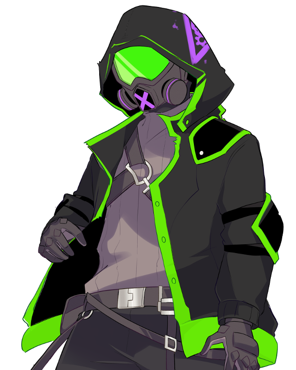
マヤ :
名前は『マヤ』
苗字等はなし、本名じゃないですが本人も誰も本名を知らないのでこれが本名ってことでオッケーです！
マヤ :
記憶喪失の全身機械人間。特に悪い事をしている自覚はないですが楽しいことを追い求めた結果悪い事"も"平気で出来るタイプの精神年齢幼め25歳。
マヤ :
戦闘スタイルは体内から生成した長銃での狙撃&射撃、ミサイルも撃てます！
システムはつよつよですがパーツが古いので喋ってるときにバグったりノイズがはしります、聞き取りづらいときは叩いて治してあげてください！
マヤ :
グリムギアに少し恩があるので基本的には大人しいです、DVDとかあげると再生できるのでDVDプレーヤーにもなります。以上！
GM :
ありがとう！グリムギアからDVDに焼いた映像資料とか渡してそうな感じもしますわね！
GM :
そんなマヤくんのHOはこちら
◆PC1用ハンドアウト◆
シナリオロイス:ストレイ
あなたはグリムギアから硝子化事件の調査依頼を受けていた。
調査報告を対面で行うとのことで、あなたはオルタ・スクレイパーへ向かっていた。
その途中であなたは路地裏に倒れる少女を発見する。
少女の皮膚は硝子のようにひび割れており、硝子化事件の重要参考人として少女をグリムギアの元へ連れていくのであったが……少女は記憶が曖昧のようだ。
マヤ :
記憶喪失お友達ですわね…
GM :
記憶喪失のタッグで仲良くやりましょうね……
ではマヤくん自己紹介ありがとう！
GM :
続いてHO2のヴァニタスちゃん！自己紹介をお願いします
ヴァニタス :
行くぜ
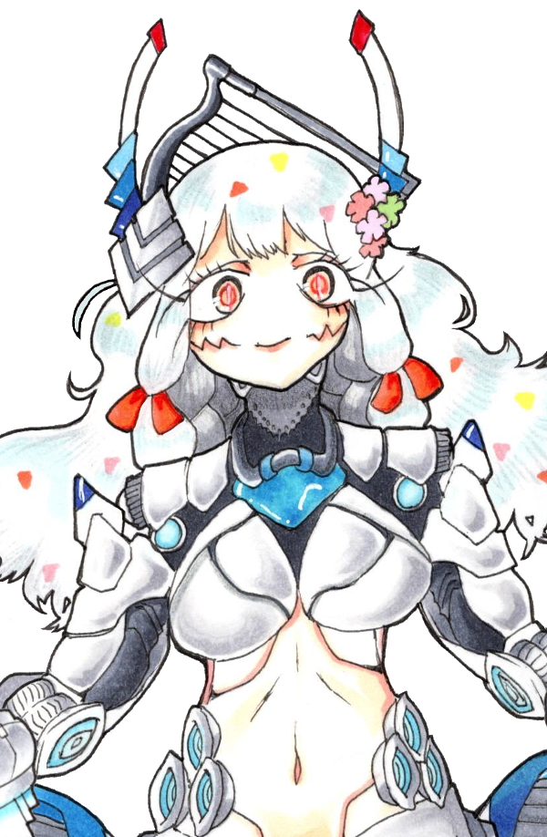
ヴァニタス :
ヴィランネーム【SAndAmAIdeN】、ヴァニタスちゃんです！
ヴァニタス :
HO1に続き全身機械マーメイドですが、人間はとっくのとうにやめておりますレネゲイドビーイングです！
ヴァニタス :
砂上都市サラーブ至上主義者で、この街にはびこる悪徳を是とする感じのヴィランです！本人はあんまり悪行を働かないよ
ヴァニタス :
今日も今日とて指に許可もとらずサラーブをパトロールしているぜ！見かける頻度は結構高いかもだし、オルタ・スクレイパーあたりを見上げれば普通にいるかも。クッソ眩しいけど
ヴァニタス :
戦闘スタイルはねぇ、遠距離RC型。めちゃ高行動値からエンゲージ離脱をしないと接近されてポンコツと化す。あと気づいたらダイス数がめっちゃ少なかった。どうにかなるなる
ヴァニタス :
サラーブ内の関係性で言うと薬指のファルシオンちゃんとちょっと仲が良いです
ヴァニタス :
以上だ！
GM :
ありがとう！毎日クソ治安のサラーブをパトロール（悪事は取り締まらない）してくれてるのはありがたがっているヴィランも多いでしょう…
GM :
そんなヴァニタスちゃんのHOはこちら！
◆PC2用ハンドアウト◆
シナリオロイス:“異なる隣人（アウトサイド・ネイバー）”
独自に事件を調査していたキミ（理由付けは自由）は“異なる隣人”と名乗る硝子化事件の首謀者らしき人物と対峙する。
しかし“異なる隣人”は手にしていた鏡から放たれた光に紛れて姿を眩ませてしまう。
光を浴びたキミは不可解な感覚を覚えるのであった。
GM :
なんかフラッシュされます。なんて悪質なんだ。
ヴァニタス :
反射光を反射されていく
GM :
ビカビカですよもう（適当言うGM）
では次に参ろう！
GM :
HO3！日向雛ちゃん！
日向雛 :
はーい！
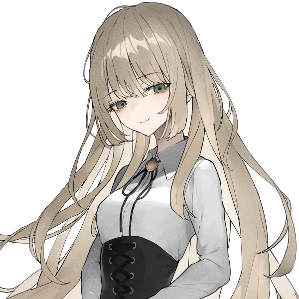
日向雛 :
日向雛、17歳の日本人女子高生です！
日向雛 :
真面目で丁寧な口調で話すけど大体ゆるゆるほわほわにこにこしてる奴です。
日向雛 :
元々はUGNチルドレンで、ジャーム化したヒーローを処分するジャーム処理班“ハンターズ”に所属するUGNエージェントでした。
日向雛 :
ですが一年前に今のジャーム化したヒーローを殺さないといけない世界に疑問を持って、ジャーム処理班を脱退。
日向雛 :
UGNが保管していた賢者の石を盗んで、最近サラーブまで逃げてきました。多分数ヶ月も経ってないと思うのでかなり新参者です。
日向雛 :
ヴィランとしての欲望は、プライメイトオーヴァードに進化し、この世全てのレネゲイドをウロボロスの力で吸収することです。
日向雛 :
そのために賢者の石を探していて、サラーブに来たのも賢者の石の存在や情報がありそうだと思ったからでした。
日向雛 :
普段はサラーブの郊外の廃ビルに住み着いて、そこで能力を使った診療所を開いています。
日向雛 :
ただ医師免許を持っていないしちゃんとした設備もなくて、なんか申し訳ないので料金はかなり安いです。
日向雛 :
そのせいで全然稼げてなくて、大体いつもお腹を空かせています。
日向雛 :
すみません一週間位何も食べてなくて……とか言う。コピーした《麗しの容貌》の効果で健康状態維持してるからギリ生きてます。
日向雛 :
ブリードはピュアブリード。シンドロームはウロボロス。原初エフェクトで取得した振動球を使って戦うRC型です。
日向雛 :
クライマックスでは一回だけ賢者の石とクリ値を下げるエフェクトとタイタスを使って、クリ値2にしてクソデカ達成値を出しにいきます。
日向雛 :
でも使うまでにロイスが全然なかったり、侵蝕がやばかった場合はクリ値3で我慢するかもしれません。
日向雛 :
以上です！
GM :
ありがとう！お金はないが野望はある。クリ2でどんな出目が出るかGMもいまから戦々恐々としています
日向雛 :
達成値500目指します！
GM :
この出目ハンパねぇ！そんな流石PC3ァのHOはこちら
◆PC3用ハンドアウト◆
シナリオロイス:ジャス＆ティティ
ジャス＆ティティはキミが都市の新参者だった頃から親交のある姉弟だ。
彼らは時にキミの助けとなったり、逆に救われもした持ちつ持たれつの関係を築いていた。
そんな姉弟が突如として姿を消した。都市では珍しくもないことだが、硝子化事件のことが脳裏を過ったキミは不安に駆られて調査に乗り出すのであった。
GM :
仲良し姉弟の2人が最近姿を見ていないらしいです
日向雛 :
ジャスティティちゃん！！心配！！
日向雛 :
がんばって探します
GM :
頑張って彼らを探しましょう！ということで次の方へ！
GM :
お次はメアちゃんことメアリー=ブラッドルードちゃん！
メアリー :
はいなな！
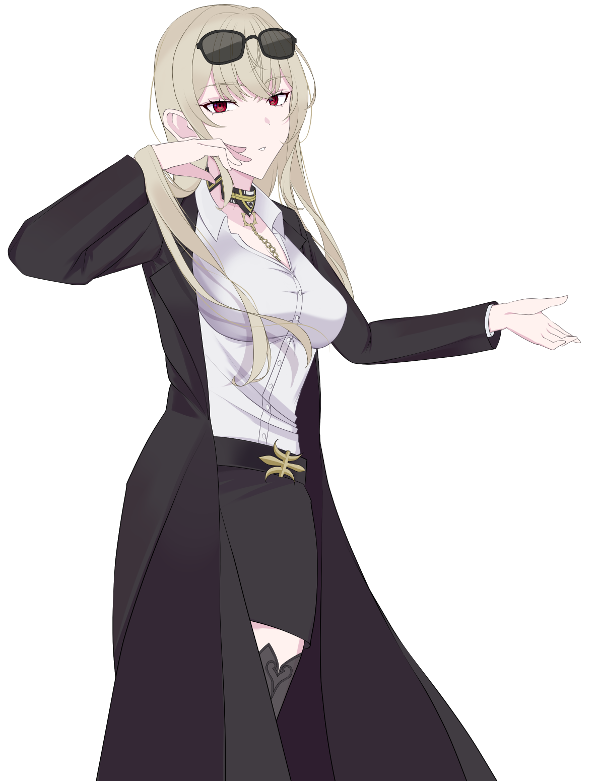
メアリー :
メアリー=ブラッドルード。ヴィランネームは"黄金の心臓"。
メアリー :
「報酬さえ弾めば、どういう依頼でも達成する」との評判で名を馳せている"何でも屋"です。
メアリー :
メアリーはサラーブで育ったため、おそらくサラーブの典型のような精神構造をしています。
欲が深く、疑り深く。私利私欲のために表裏を使いわける。
メアリー :
座右の銘は「弱肉強食」「タダより高い物は無い」。大嫌いな言葉は「自己犠牲」「清貧」。
メアリー :
特に"金銭への執着"が強く、オーヴァードとしての能力は全て金儲けのために使っています。
メアリー :
シンドロームは、ブラム=ストーカー/ウロボロス。
メアリー :
自身の血液から"処刑器具"を作り出す能力を持っています。武器作成自体はブラム=ストーカーにありがちな能力です。
メアリー :
特筆するべき点としては、その血液が『黄金』であること。
厳密には(人体錬成みたいな感じで)複数の人間を材料に精製した"液状のRB"が黄金の血液となって体内を循環しており、
その能力を引き出すことで、非常に威力の高い武器を作成できることが挙げられるでしょう。
メアリー :
メアリーはこれまで、この特殊体質を利用する事でサラーブの最貧困層で生きてきましたが、そのあたりの経緯は割愛。だいたい第1次レネゲイドウォーの所為です。
メアリー :
実際のエフェクトの性能としては、単体火力特化。
他のPC達が持っている自己防衛のエフェクトも範囲攻撃のエフェクトを持っていない代わり、
クライマックス戦闘では、前人未踏の武器5倍アタックが出来ます。脅威の攻撃力固定値275。
メアリー :
エネミーとしての強さで考えた場合、メアリーはPC最弱ですけど、強大なヴィランとの決戦なら活躍できると思います。ヒーロー向きの人材。
メアリー :
以上かな！(ヴィランの都市における)善良な？一般人枠？として頑張っていこうと思います！よろしくおねがいします！！
GM :
ありがとう！金への執着とダメージがエグいメアちゃん……これからどうなっていくのでしょうか
GM :
そんなメアちゃんのHOがこちら！
◆PC4用ハンドアウト◆
シナリオロイス“アベル”
ある日、キミは“アベル”を名乗る人物から依頼が申し込まれる。
内容は「“異なる隣人”が持つアイテムを回収し引き渡すこと」
“アベル”は多額の前金に加え、成功した暁には言い値の報酬まで約束するのだった。
GM :
至極単純でメアちゃんにぴったりのHOだね
メアリー :
依頼自体が単純でも、こいつには絶対にウラがあると、そう言ってるわ。私のゴーストが。
GM :
そうとも言えるしそうでも無いと言える。捉えかた次第だ。
GM :
ではでは、最後のPCに参りましょう。ママことイクサ・スミェールチさん！
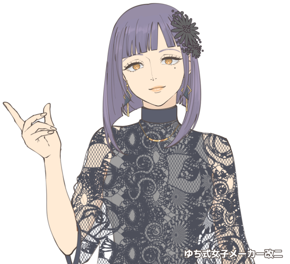
イクサ :
「お願い、私の"子供達"。 お母さんを──守って。」
兵器開発・PMC企業コングロマリットの筆頭会社、IXAコーポレーションの若き社長です！
その正体はFHセルリーダーにしてヴィラン。
第二次レネゲイドウォーを真に引き起こすべく、あらゆる勢力に武器と武力をばらまく、死の商人そのもの。
無抵抗状態のオーヴァードを加工可能な"素材"に変換する能力を持ち、自身の子供を"素材"にして作った特殊兵器を用います。
イクサ当人はオーヴァードとして優れた戦闘力を持つ訳ではありませんが、
対話型総合支援システム「エス」(S.age)
特殊四脚大型戦車「アール」(R.ampart)
を筆頭に、多様で優れた"子供達"がイクサを支援し守ります。
データとしてはモルフェウスピュアによる《黄金錬成》全振りによる圧倒的常備化点126点で構築されたアイテム至上ビルドです！
もはや人とは呼べない状態に子を加工しながらも、子供達を愛していると口にするのはおかしな話ですが、
エゴイズムに歪んだイクサの認識では嘘ではない様子。
子供達以外の他者にも人当たりは良く穏和ですが、自分のやりたいことの為に必要とあらば、他者を平然と笑顔で踏みにじる事ができます。
契約上の信用はできますが、個人的な信頼を決して置いてはいけない危険人物と言えるでしょう！
GM :
一片に来た！ちょっと読む！
GM :
読んだ！戦争屋＆人間加工＆ママのクソヤバPC、いつ見てもインパクト抜群でございます
GM :
そんなイクサママのHOはこちら！
◆PC5用ハンドアウト◆
シナリオロイス:エトワール・ウェイストルム
キミは関係はどうあれ、エトワールに頼りにされる存在だ。
最近の硝子化事件が彼女の傘下組織、延いてはシマにまで影響が出始めている。
その影響はキミの活動にも支障が出始めているため、事態を重く見た彼女は共同で事件の解決を申し出る。
GM :
"関係はどうあれ"、親指のエトワールと仲がよろしいロイスでございます
イクサ :
うふふ♡
GM :
怖いよぉ…
GM :
ではでは、全員の紹介終わり！本編に入っていきますよ！
GM :
まずはマスターシーンから、ゆっくり腰を落ち着けてご覧になっていてください。
Main play
Scene00 奪われた可能性

GM :
都市の路地裏。
表の通りから聞こえる喧騒とネオンの輝きから離れたこの場所は、静寂と暗闇が毛細血管のように巡っている。
GM :
シン、と静まった路地は恐ろしく不気味で、暗闇からは名も知れぬ怪物が今にも飛び出してきそうだ。
GM :
だが、そんな静寂も長くは続かない。現にたった今、静寂を破る騒音が土煙と共に路地を駆け巡ったからだ。
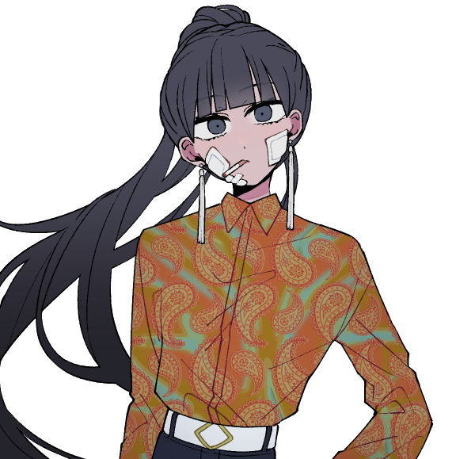
ジャス :
「ぐっ、クソが……無暗に手を出すんじゃなかった……っ！」
GM :
腕を異形化させた少女の前に、ジャスとティティが膝をつく。
ジャスは得物の槍で身体を支えて悪態をつくが、深手の傷を負った身体では睨みつけることが精一杯だ。
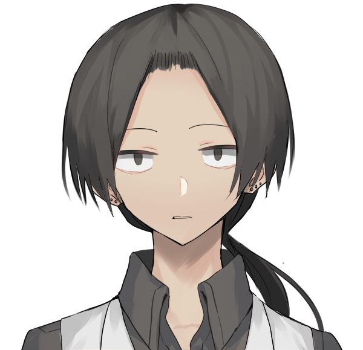
ティティ :
「調子に、乗りやがって……」
GM :
ティティは顔を上げて、負け惜しみとばかりに少女を睨みつける……。
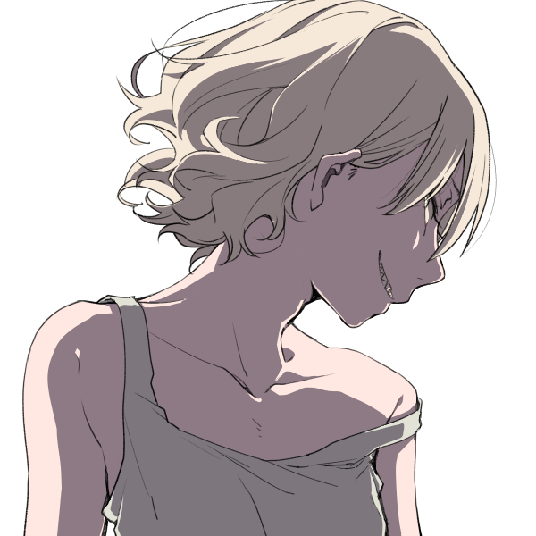
異なる隣人 :
「ケチな悪党如きがしゃしゃんな……よっ」
GM :
ティティの顔面に蹴りが飛ぶ。
GM :
彼の頭蓋は骨肉がひしゃげた気味の悪い音を立て、ぐらりと揺れた身体はあっけなく血の海に沈んだ。
ジャス :
「……ッこの、テメェ！！」
GM :
ジャスは短慮にも怒りのまま槍を振るうが、虚しく空を切る。
GM :
……その結果、ジャスが得たものは深々と自身の胸を貫く異形の爪だ。
異なる隣人 :
「手間ァ取らせんなって、ったく……」
GM :
少女は倒れた姉弟を踏み越えて、彼女達が守っていたものに近づく。
路地裏の角で惨めに身体を縮こませている、もう一人の少女の元へ。
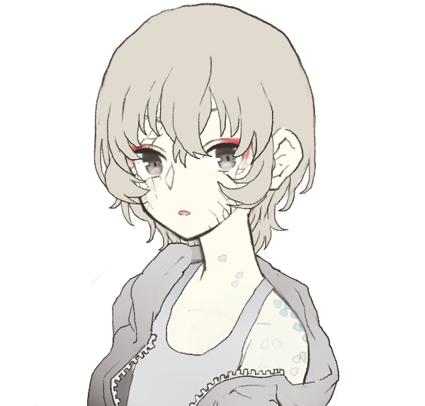
少女 :
「フェイル、どうしてこんな……！」
異なる隣人 :
「愛想が尽きた。あとは────」
異なる隣人 :
「……いや、なんでもねぇ」
GM :
フェイルと呼ばれた少女は乱暴に襟首を掴み壁へ押しやると、怯える少女の手から何かを取り上げる。
GM :
それは手鏡のようだ。
GM :
手鏡は妖しい光を発すると同時に少女から『何か』を吸い上げていく。成す術なく呻くことしかできない少女の身体にはヒビが広がり、今にも砕けてしまいそうだ。
少女 :
「う、ぁぁ……」
異なる隣人 :
「恨むなよ。これも私の、いや、お前の……ッ！」
GM :
その時、闇から銀色の軌跡が伸びて異形化した腕を拘束する。
GM :
フェイルはそのまま地面に引き倒されるが、すぐさまそれを引き千切って軌跡の先を目で追った。
???? :
「────ここで何をしている、のかな？」
GM :
フェイルの視線の先には暗闇から男が姿を覗かせていた。
和装らしい袖から鎖を伸ばした男は傷ついた者達を一瞥すると、フェイルを見つめながら、少女に向けて声をかけた。
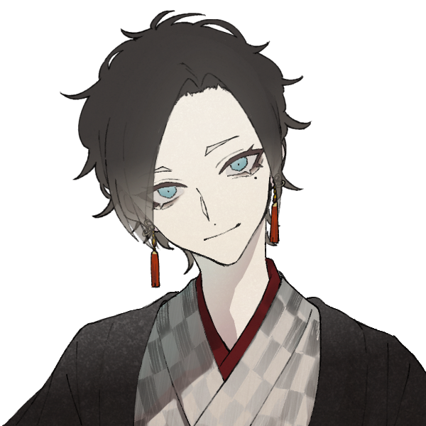
アベル :
「さあ、ここを離れてくれ。この暴れん坊には僕が灸を据えておくとしようじゃないか」
異なる隣人 :
「テメェ、なんだってここに……！ けど、ヘヘッ……運が悪かったな。この力はもう私のもんだっ！」
少女 :
「……！！」
GM :
鎖と爪が衝突する。瞬きの間に火花と正体不明の光が交差し、両者は激しい攻防を繰り広げる……。
GM :
少女は朦朧とした意識とヒビ割れた身体を引き摺り、戦場を背に路地を離れる。名も知らない、男の言われるがままに。
GM :
……どのくらい離れただろうか。
戦闘の渦中から離れ、意識も記憶も曖昧なままひたすら歩き続けた身体は糸が切れたようにコンクリートの上に倒れこんだ。
少女 :
「ぅ、うっ……」
少女 :
少女の意識が徐々に閉じていく中、ふと自分を助けてくれた姉弟と男の姿が脳裏をよぎる。
少女 :
確か、あの人達は……
少女 :
────あの人達は、誰だったのだろうか？
GM :
シーンエンド
Scene01 迷い子の仮宿
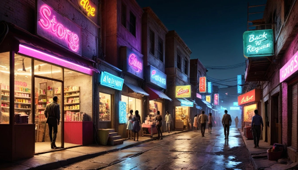
GM :
砂漠の夜はよく冷える。悪党が集いし砂上都市サラーブであっても、それは例外ではない。
GM :
繁華街を道行く輩達は下卑た笑いで溢れる酒場へと、もしくは人肌を求めて扇情的なネオンが漏れる店へと足を踏み入れる。これはサラーブの夜での日常風景だ。
GM :
だが、あなたの目的は繁華街で夜を過ごすことでは無い。
あなたは"都市管理局局長"ことグリムギアから、あなた宛てに召集のメッセージが届いたのだ。謂わばこれは道すがら、繁華街からサラーブ中央に位置する「オルター・スクレイパー」に向かっている道中だ。
マヤ :
アイモニターに映るマップを確認する傭兵のような風貌の男。
首に触れるとカチッと軽い音を立てて画面は切れる…筈だったが、なかなか消えないマップに小さな溜息をつく
マヤ :
「 ……あ～、召集かけるなら迎えぐらい呼んで欲しーよな。」緩めのフードの中へ片腕を突っ込むと気温の感覚スイッチを切りながら怠そうに繁華街を歩く、アイモニターを軽く叩くとやや不安な電子音を立てて やっとマップは消えたようだ。
GM :
どうにも行かない自身の身体に試行錯誤していると、男が向かい側からあなたに手を振って近づいてくる。どうやらあなたとは顔見知りのようだ。
GM :
覚えているかは別として
男 :
「よ、マヤじゃねぇか。相変わらず調子悪そうだな。 え？ 回路に砂でも詰まってるんじゃねぇか？」
マヤ :
「よ！こんな街じゃ不調のひとつふたつ日常だろ？ …オーバーヒートしたら街ごと吹き飛ばしちまうかもな！」ケラケラと笑いながら
男 :
「ハハハ！笑えねぇジョークだ……ジョークだよな？」
男 :
「まあ、それはそれとして……どうだ、最近は？ 俺ぁ"例の事件"のせいで傭兵需要が上がってな……」
GM :
例の事件、というのは巷を騒がせている硝子化事件のようだ
マヤ :
「あー…なんだっけ、…”ガラスがなんたら”ってヤツか？」実際はあまり記憶にないのだが丁度データに新しいワードだったようだ
男 :
「話が上がったのも最近だからうろ覚えなのもしょうがねぇか……」
男 :
「ま、最近物騒だからよ。いつも以上に気は張っておけよ？」
男 :
「おまえが硝子化しちまったら売れる部品も無くなっちまうからな！」
GM :
男はガハハ！と笑いながらマヤの肩を叩く
マヤ :
「繧ｸ繝｣繝ｳ繧… おっと、売る前に分解する知識もねぇだろっ。」なにやら機械音のような呟きが混じるが意に介せず笑うと軽く肩を叩き返す
男 :
「ちげぇねぇや。ま、精々スクラップにならねぇよにしろってこった」
男 :
「んじゃ、俺ぁ行くぜ。贔屓の可愛い子ちゃんが他のに取られちまうからな」 そうやって男はあなたから離れていく
マヤ :
「お前も気を付けろよ～…スクラップに…、あー 人間はスクラップって言わねぇのか…… ま！元気でやってくれや！」去っていく背中に軽口を叩きながら手をあげて
マヤ :
――暫く歩きながら マヤちゃん一晩いかが？と猫なで声で誘う美女を「ゴメンね～今日はオシゴト♪」と両手を合わせて断わりつつ繁華街を抜ける、
マヤ :
「…で、さっきのアイツ 誰だっけ？」
GM :
記憶にない見知らぬ男との会話を終え、あなたは歩みを進めていく。

GM :
……あなたの視界の端に、ふと気掛かりなものが映り込んだ。
それは煌びやかな繁華街とは似つかわしくない、襤褸切れと見間違えられそうな少女だ。
GM :
そんな少女が、弱弱しく倒れ込んでいる。
サラーブにおいては裏路地や路上で生き倒れる者は珍しくない。それらは酔っ払いか、もしくは死体などがほとんどだが……。
GM :
そんなことを知りつつも、あなたは意識は力なく倒れる少女に割かれた。少女の周りに僅かに散らばった硝子の破片があったのも気を引く原因だったのかもしれない。
マヤ :
目的地しか見えていなかったマヤの視界に、一瞬キラリと光る硝子の破片が映りこむ。普段だったら気にも留めない光景なのだがちょうど例の事件の話題が出たあとだ 踵を返して少女へ歩み寄って
マヤ :
「…死体？じゃねぇか、生きてそうだし…」事件の被害者の死体かと考えるが少し違った様子に悩んで
マヤ :
「ガキの扱い方は～…記録してねぇんだよなー…」若干めんどくさそうに呟くと、少女の服の襟を猫のように掴み、持ち上げて揺すってみる
少女 :
「うっ、うぅ……」
少女 :
「はっ……！？」
GM :
少女は動揺したように辺りを見回した後、ぎょっとした顔であなたを見つめる。
少女 :
「あ、ぁな、あなたはだれ……！？ ここ、どこ……！？」 目を白黒させている
マヤ :
「おっと、お決まりのヤツ～…」掴み上げたまま独り言
マヤ :
「さぁ、どこだろうなココ…俺もすぐ道忘れちまうから。」うーんと首を傾げて謎の同調をする
少女 :
「ぇ、ま、迷子……？」 思わずジタバタさせていた手足を止める
マヤ :
「そ、俺ちゃん迷子！…んで、お嬢ちゃんも迷子。」でしょ？と空いている片手で指をさす
少女 :
「う、うん……そう、たぶん……」 自身がないのか、目を伏せて呟く
マヤ :
「オッケ～♪ じゃあ”迷子センター”にいきましょう～！」少女を地面に降ろすと明るい声で矢継ぎ早にそう告げる
マヤ :
「…それとも此処のこる？」寂しい路地裏から明るい大通りへ数歩下がりながら有無を言わさぬ様子で
少女 :
「まい…セン…？」
少女 :
「……ううん。一人はいや、かも……」 小さく首を横に振って
マヤ :
「…よし、いい子だ んじゃ…まず自己紹介。」力業で落ち着かせることに成功したのを見るとそのまま戻ってくる
マヤ :
「俺は”マヤ” マヤちゃんって呼んでいーよ。嬢ちゃん名前は？」
少女 :
「マヤ、ちゃん……えーっと、私は……」
少女 :
名を口出そうとするが数秒ほど口を噤んでしまい、目を左右に泳がせた。
少女 :
「あれ、名前……私に、あったっけ……？」 空虚になった頭から、その言葉を一つ絞り出す
マヤ :
「ははーん…… 俺とオソロイってことね。」頷いてあっけらかんと返す
少女 :
「わかんない……」 過去のことも思い出せないようで、少女はすっかり意気消沈してしまった
マヤ :
子供の扱いはどうも苦手なようで、一緒に若干しょんぼりしてしまう
マヤ :
「…ま、これのなんかの縁だし 俺と違って思い出せるかもしれないから。まずはエラい人に頼るしかねぇな。」俺も本名じゃないし、と言いながら元の用事を思い出したように
マヤ :
「…てか、寒くねぇの？」目線を合わせるように隣へしゃがむとタンクトップ姿の彼女を指差して
少女 :
「えっと、ちょっと……ぶるぶるする……」
マヤ :
「じゃ、説明長いし着ていーよ これ着てりゃ絡まれないし。」自分の羽織っていた上着をぽいっと渡すと映写機のスイッチを入れる
マヤ :
「上映会とか久々～♪ ちゃんと映れよな…」等とぼやくと、若干映像は劣化しているが壁に先ほどの様子が映し出される
少女 :
「わっ……」 上からぶかぶかの上着を羽織って、そそっと映像に近づき覗く
マヤ :
「これ俺の視界 さっきお嬢ちゃんを此処で見つけて～、で…これが起こしてるとこな。」まず起こしてる状況を説明する
マヤ :
「…あ、これは要らないや」風俗街の映像はスキップする
少女 :
「？」 不思議そうな顔で映像を見つめるが……特に思い出せることはないようだ
マヤ :
「んで…今からこの建物の、このヒトの所に一緒にいきます。」 ｼﾞｼﾞｼﾞ…と映像に目的地とグリムギアが映し出される、この映像は先ほどより劣化しているがこれはマヤの記憶の薄さによるものだ ある程度の特徴は分かるだろう
少女 :
「う、うん……？」 要領を得ているのか得ていないのか、微妙な声で返事をする
マヤ :
「……嬢ちゃんの倒れてたとこ、硝子がいっぱい散らばってるだろ？」ちょいちょい、と先ほどまで少女が倒れていた場所を指差す
マヤ :
「最近ここらでは人間が硝子になる事件が起こってる、嬢ちゃんの記憶喪失と関係あるかもしれない。」調べたらさらっと思い出せるかもしれないしな、と付け足しながら
少女 :
「……そう、なんだ」 硝子化する事件について興味を持ったのか、はたまた記憶を取り戻す手がかりになるからか、少し声に張りが出る。
少女 :
「……うん。一緒に、いく。私が助けになるのなら……。」
少女 :
少女はそれが役割なら、と言った風に頷いてみせた。
マヤ :
マヤにとっても硝子化は一応、他人事ではない…とはいえ普通の人間たちとは違って『人類全てが一撃で砕けてしまうのなら射撃など面白くない』というのが専らの彼の懸念だ
マヤ :
…そんなことを思いながらぼんやりと映像を眺めていると少女の言葉に若干ポカンとした反応をしてしまう
マヤ :
「……マジでこの街の人間じゃないらしいな。」
少女 :
「……？」 あなたの考えなどいざ知らず。少女はことん、と首を傾けている。
マヤ :
「…ま、じゃあ～ 大体の理由は分かっただろ？」カチッと小気味の良い音を立てて映写機をオフにするとその場に立ち上がって彼女を見下ろす
マヤ :
「ここからじゃ10分ぐらいか…それ着てりゃ誘拐されねぇから暑くなっても脱ぐなよ？」マヤがフードにスプレーで描いたギア(歯車)のマークは一応機能しているらしい、そう言いながら指を指す
少女 :
「ん、わかった……」 ぶかぶかの袖を振って応える
マヤ :
先行して大通りへ戻るが、その途中ﾎﾞｼｭﾝ！と軽い爆発音と共にアイカメラ(先ほど素直にスイッチが切れた映写機)から小さな煙があがる
マヤ :
「…あ～、クソッ！珍しくお利口ちゃんだなと思ったら…ッ！」軽く悪態をつきながらも足はとめず目的地へ
少女 :
突然、顔から煙の上がった様にびっくりするが、何が面白かったのか少女はクスクスと笑ってみせた。
GM :
あなた達……1人と1体はサラーブ中央へと向かう。
歩みを進めれば背の低い建物は徐々に背を伸ばし、あっという間にビル群が聳える摩天楼へと切り替わっていく。少女は興味津々といった様子で忙しなく頭を動かしながら、その光景を網膜に焼き付けていた。
GM :
その中でも、やはり少女の気を大きく引いたのはあなた達の正面に聳え、サラーブの天を衝く『オルタ・スクレイパー』だった。
GM :
それを見上げる少女の後頭部は身体ごと後ろに倒れてしまいそうなほど傾いていた。
少女 :
「うわぁ……」 目を丸くしてオルタ・スクレイパーを見上げている。
マヤ :
「相変わらずデケェなぁ～…」少女の後ろで一緒に見上げながら、こちらへズイズイと傾いてくる彼女を自然と支える形に
少女 :
「すごい、ね……。お空に届いちゃいそう……」 塔のてっぺんまで見ようと目を細くしている
少女 :
「よく、ここに来るの？」
マヤ :
「んー、どうだっけな…？時々？」もっと来てるかもしれないがきっと忘れている記憶も多い、そこそこに答える
少女 :
「そう、なんだ……。忘れちゃうくらい、たくさん来てるのかも、ね……」 空を見上げながら、そうポツリと呟く
???? :
「いやですねぇ、よく来てるじゃないですか」
GM :
突然、無人だったハズのあなた達の背後から透き通った声が響く。
GM :
振り向けばそこには紺碧のスーツを纏い、頭部を歯車に置き換えた存在────グリムギアが立っていた。
グリムギア :
「こんばんは、マヤ。まだ私を忘れてはいないだろう？」
GM :
コツコツと革靴の足音を響かせて、グリムギアはあなた達の傍に立つ。
To Be Continued...
CREDIT
生きてる
異形頭めーかー
海ひつじ屋め～か～
乙女ーか
逆光乙女
在庫処分
長髪のお兄さん
トコトコ王国
ななめーかー
武天式（ﾂﾖ）女メーカー
ゆち式女子メーカー改二
Bing Image Creator
moff
本作は「矢野俊策」「有限会社ファーイースト・アミューズメント・リサーチ」「株式会社 KADOKAWA」が権利を有する
『ダブルクロス The 3rd Edition』の二次創作物です。
©︎ 矢野俊策/F.E.A.R.